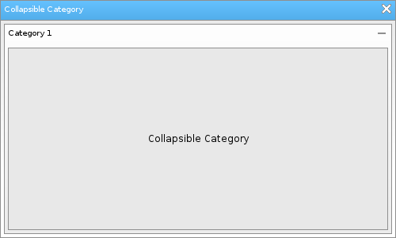

Löve Frames - The Collapsible Category Object
Return to Index
Information
The collapsible category object can is essentially a panel that can be opened or closed and can contain one object as a child.
Example Use
local panel = loveframes.Create("panel")
local colcat = loveframes.Create("collapsiblecategory")
colcat:SetObject(panel)
Event Callbacks
OnOpenedClosed - Called when the object is opened or closed
- Arguments passed: self [object]
- Arguments passed: self [object]
local frame = loveframes.Create("frame")
frame:SetName("Collapsible Category")
frame:SetSize(500, 300)
frame:CenterWithinArea(unpack(demo.centerarea))
local panel = loveframes.Create("panel")
panel:SetHeight(230)
local text = loveframes.Create("text", panel)
text:SetText("Collapsible Category")
local collapsiblecategory = loveframes.Create("collapsiblecategory", frame)
collapsiblecategory:SetPos(5, 30)
collapsiblecategory:SetSize(490, 265)
collapsiblecategory:SetText("Category 1")
collapsiblecategory:SetObject(panel)
text:Center()

Methods
SetText - Sets the object's text
- Returns 1 value: text [string]
- Returns 1 value: object [object]
- Returns 1 value: closedheight [number]
- Returns 1 value: open [boolean]
object:SetText(text[string])GetText - Gets the object's text
- Returns 1 value: text [string]
local text = object:GetText()SetObject - Sets the object's object
local panel = loveframes.Create("panel")
object:SetObject(panel)
GetObject - Gets the object's object - Returns 1 value: object [object]
local selfobject = object:GetObject()SetClosedHeight - Sets the height of the object when it is closed
object:SetClosedHeight(height[number])GetClosedHeight - Gets the height of the object when it is closed
- Returns 1 value: closedheight [number]
local closedheight = object:GetClosedHeight()SetOpen - Sets whether the object is open or not
object:SetOpen(open[boolean])GetOpen - Gets whether the object is open or not
- Returns 1 value: open [boolean]
local open = object:GetOpen()